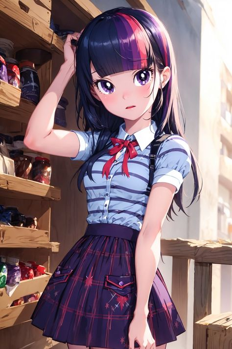
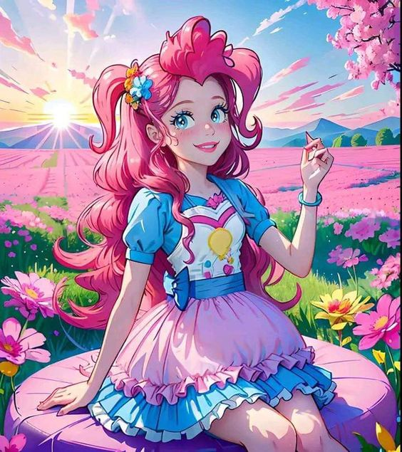
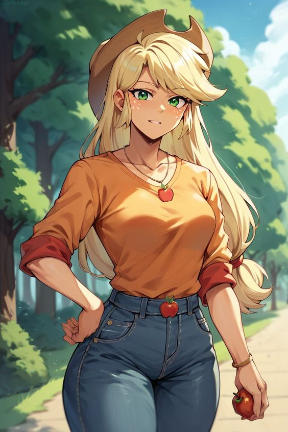
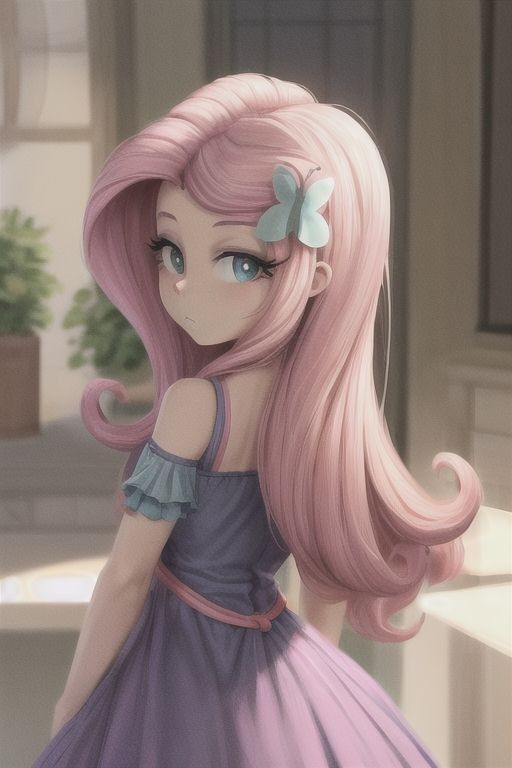
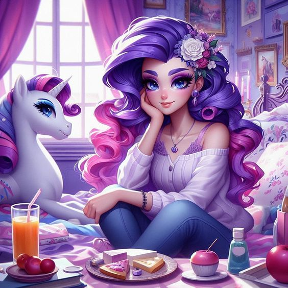

KARTUN CANTIK
MY LITTLE PONY HUMAN
1.TWILIGHT
2.PINKY PIE
3.APPLE JACK
4.FLUTTER SHY
5.RARITY
6.PUTRICELESTIA
1.TWILIGHT

Twilight Sparkle , juga digambarkan sebagai Sci-Twi , adalah seorang manusia perempuan , seorang siswi SMA Canterlot , dan seorang tokoh utama dalam serial My Little Pony Equestria Girls . Dia adalah versi manusia dari Putri Twilight Sparkle .Twilight Sparkle adalah karakter utama sentral dari My Little Pony Keajaiban Persahabatan. Dia adalah unikorn poni perempuan yang berubah menjadi Alikorn dan menjadi seorang putri dalam Magical Mystery Cure. Dia juga merupakan putri Twilight Velvet dan Night Light, adik perempuan Shining Armor, adik perempuan mertua Putri Cadance, dan bibi dari Flurry Heart.
Pada awal seri, dia dan Spike, sahabat dan asistennya, pindah dari Canterlot ke Perpustakaan Golden Oak di Ponyville untuk mempelajari keajaiban persahabatan—dan meraih gelar "Putri Persahabatan", dan dalam Twilight's Kingdom - Part 2, dia mendapatkan kastilnya sendiri- bernama Istana Persahabatan. Twilight Sparkle mewakili elemen keajaiban
Kembali ke atas
2.PINK PIE

Pinkie Pie, dengan nama lengkap Pinkamena Diane Pie,[catatan 2] adalah poni Bumi perempuan dan salah satu karakter utama My Little Pony Keajaiban Persahabatan. Dia adalah tukang roti yang energik dan mudah bergaul di Sugarcube Corner, di mana dia tinggal di lantai dua dengan hewan peliharaan buaya yang giginya ompong Gummy, dan dia mewakili elemen kesenangan. Pinkie menulis dan melakukan banyak lagu, dan dia adalah sumber dari banyak lelucon lucu dan kekartunan acara itu. Dia disebut Ponka Po di beberapa barang dagangan.
Kembali ke atas
3.APPLE JACK

Applejack adalah poni bumi perempuan dan salah satu karakter utama My Little Pony Keajaiban Persahabatan. Dia tinggal dan bekerja di Sweet Apple Acres bersama neneknya Granny Smith, abang laki-lakinya Big McIntosh, adik perempuannya Apple Bloom, dan anjingnya Winona. Dia mewakili elemen kejujuran.Applejack adalah salah satu tokoh utama dalam kartun My Little Pony: Friendship Is Magic dan My Little Pony: Equestria Girls. Dia adalah earth pony berwarna oranye dengan surai berwarna kuning pirang yang diikat. Dia digambarkan sebagai sosok farm girl yang suka memakai topi koboi. Dia bekerja sebagai petani apel di perkebunan Sweet Apple Acres di Ponyville. Karakter Applejack sendiri adalah karakter yang jujur, pekerja keras dan mudah dipercaya. Dia memiliki hewan peliharaan seekor anjing yang diberi nama "Winona". Elemen yang dimiliki Applejack adalah element of honesty atau elemen kejujuran.
Kembali ke atas
4.FLUTTERSHY

Fluttershy merupakan salah satu karakter utama dalam My Little Pony: Friendship Is Magic dan My Little Pony: Equestria Girls. Dia adalah kuda pegasus berwarna kuning dengan surai merah muda yang panjang menjuntai. Karakter ini diambil berdasarkan dari My Little Pony generasi pertama yaitu earth pony Posey.Karakter ini diambil berdasarkan dari My Little Pony generasi pertama yaitu earth pony Posey. Dilihat dari namanya, sudah jelas karakter ini memiliki sifat pemalu, lembut, gaya bicaranya yang kalem, dan dia penyayang binatang serta pecinta lingkungan.
Kembali ke atas
5.RARITY

Rarity adalah salah satu karakter utama yang ada di kartun My Little Pony: Friendship Is Magic dan My Little Pony: Equestria Girls. Dia adalah kuda unicorn berwarna putih dengan surai berombak berwarna ungu. Karakter ini diambil berdasarkan dari My Little Pony generasi pertama yaitu ponies Glory dan Sparkler.Rarity adalah salah satu karakter utama yang ada di kartun My Little Pony: Friendship Is Magic dan My Little Pony: Equestria Girls. Dia adalah kuda unicorn berwarna putih dengan surai berombak berwarna ungu. Karakter ini diambil berdasarkan dari My Little Pony generasi pertama yaitu ponies Glory dan Sparkler. Dia adalah pecinta fesyen atau fashionista dan dia mengembangkan bisnis butik di Ponyville dengan nama Carousel Boutique. Meskipun dia kadang-kadang mudah putus asa dalam bisnisnya, tetapi dia dengan murah hati dan terus berusaha untuk terus berinovasi menciptakan gaun yang pas dengan inner beauty pemakainya. Dia memiliki hewan peliharaan seekor kucing persia yang diberi nama "Opalescence" dan biasanya dipanggil "Opal" saja. Elemen yang dimiliki Rarity adalah element of generosity atau elemen murah hati atau elemen kedermawanan.
Kembali ke atas
6.PUTRI CELESTIA

Putri Celestia, dipanggil Ratu Celestia dalam satu komik dan pengembangan awal, adalah poni Alikorn, mantan penguasa bersama Equestria bersama dengan adik perempuannya Putri Luna, dan bibi angkat Putri Cadance. Selain tanggung jawabnya untuk mengangkat matahari, dia juga menjadi guru Twilight Sparkle dan Sunset Shimmer pada periode waktu yang berbeda, sering menyebut Twilight sebagai "murid setiaku" sambil membimbingnya. Dia memiliki feniks kesayangan bernama Philomena.
Kembali ke atas